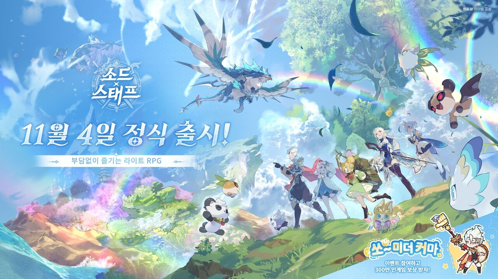
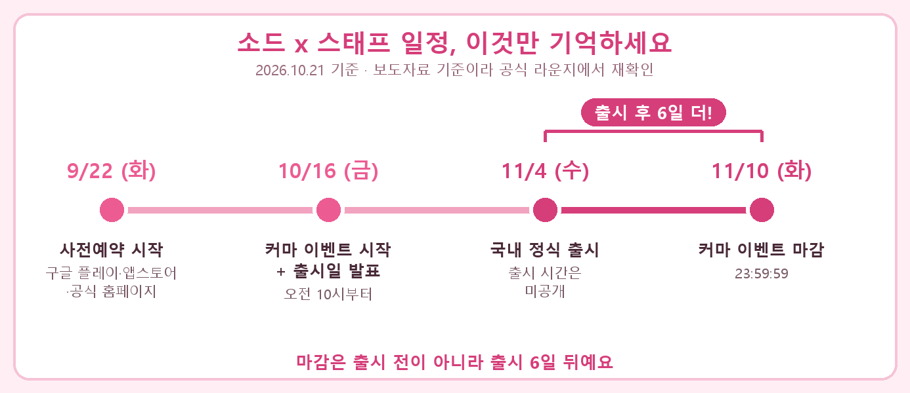
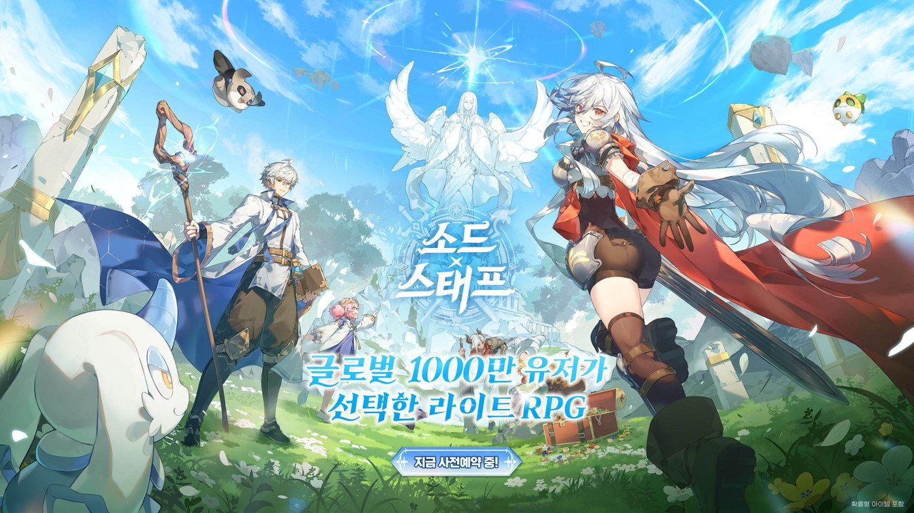

소드 x 스태프 오픈일 11월 4일 확정, 쏘미더 커마 이벤트는 왜 11월 10일까지일까
9월 23일에 소드X스태프 사전예약 글을 올릴 때만 해도 국내 출시일은 발표 전이라고 적어뒀는데요, 10월 16일에 드디어 날짜가 공개됐더라고요. 아직 제가 직접 플레이해 본 건 아니라서 발표된 내용을 기준으로 정리하는 글이고, 이번에는 게임 소개를 덜어내고 출시일과 이벤트 마감일, 이 두 날짜가 서로 헷갈리지 않게 일정만 차근차근 짚어볼게요. (2026.10.21 기준)
그래서 소드 x 스태프 오픈일이랑 이벤트 마감일은 언제예요
소드 x 스태프의 국내 정식 출시일은 2026년 11월 4일(수)이고, 사전 이벤트 '쏘~미더 커마'의 마감은 11월 10일(화) 23:59:59예요. 발표한 곳은 볼트레이 게임즈, 발표 날짜는 10월 16일(금)이고요. 10월 21일 기준으로 출시까지는 14일이 남았어요. 출시 시간은 아직 나온 게 없어서, 그 부분은 아래쪽 '아직 확인되지 않은 것' 절에 따로 묶어뒀어요.

키비주얼에도 '11월 4일 정식 출시'와 쏘~미더 커마 배너가 같이 들어 있어요.
이미지 출처: 더게임스데일리 보도 이미지 (©BOLTRAY GAMES)
게임 자체가 처음이신 분들께 한 줄만 드리면, 방치형 성장에 자유로운 직업 전환과 스킬 조합을 얹은 '라이트 RPG'로 소개되는 게임이에요. 해외에서는 5월 19일에 글로벌 정식 출시를 먼저 마쳤고 누적 이용자 1,000만 명을 넘겼다고 하니, 이번 11월 4일은 국내 서비스 일정인 셈이에요. 세계관이나 시스템은 지난 글에 정리해뒀으니 여기서는 날짜에만 집중할게요.
일정 한눈표, 날짜별로 뭐가 열리나요
일정은 9월 22일 사전예약 시작, 10월 16일 커마 이벤트 시작과 출시일 발표, 11월 4일 정식 출시, 11월 10일 이벤트 마감 순서로 흘러가요.
| 날짜 | 무슨 일 | 비고 |
|---|---|---|
| 9월 22일(화) | 사전예약 시작 | 구글 플레이·애플 앱스토어·공식 홈페이지 |
| 10월 16일(금) 10:00 | 쏘~미더 커마 시작 | 같은 날 국내 출시일 발표 |
| 11월 4일(수) | 국내 정식 출시 | 출시 시간 미공개 |
| 11월 10일(화) 23:59:59 | 쏘~미더 커마 마감 | 출시 6일 뒤 |
표에서 눈여겨볼 건 아래 두 줄이에요. 출시와 마감이 같은 날이 아니라서 헷갈리기 쉬운데, 이유는 바로 다음 절에서 풀어볼게요. 참고로 10월 21일 지금은 사전예약도 쏘~미더 커마도 이미 시작된 뒤라서, 두 가지가 같이 열려 있는 구간이에요. 출시 전까지 14일 동안 이 둘을 따로따로 챙길 수 있는 셈이죠.
출시일이랑 이벤트 마감일은 왜 6일이나 차이가 나요
두 날짜는 성격이 달라서 차이가 나는데, 11월 4일은 게임이 열리는 날이고 11월 10일은 커마 이벤트 응모가 닫히는 날이라 마감이 출시보다 6일 뒤예요.
게임인 보도에 따르면 이 이벤트는 정식 출시 뒤에도 이어진다고 해요. 그래서 '출시 전에 끝내야 하는 이벤트'가 아니라, 출시하고 나서 한 주 가까이 더 응모할 수 있는 이벤트로 보시면 돼요. 사전 이벤트라는 말 때문에 출시 전에 닫힐 거라고 생각하기 쉬운데, 달력으로 세어보면 11월 4일 수요일에 문이 열리고 그다음 주 화요일 밤 12시 직전에 닫히는 흐름이라, 출시 다음 날부터 마감 날까지 6일이 더 남아 있어요.

출시일(11/4)과 이벤트 마감(11/10) 사이가 6일이에요.
직접 제작한 도해 · 일정 출처: 인벤 보도 (2026.10.21 기준)
그리고 앞서 올린 글과 어긋나 보이는 부분도 하나 짚고 갈게요. 9월 23일 글을 쓸 때는 국내 출시일이 미발표였는데, 10월 16일에 11월 4일로 확정되면서 그 문장은 이제 낡았어요. 출시일은 이 글에 적은 날짜를 기준으로 봐주세요.
쏘~미더 커마 이벤트, 참여 방법이랑 보상은 어떻게 돼요
쏘~미더 커마는 모험가 외형을 꾸며 포스터로 만들고, 해시태그를 달아 공유한 다음, 그 인증 화면을 이벤트 게시글 댓글로 남기면 참여가 끝나는 이벤트예요. 순서는 이렇게 세 단계로 나뉘어요.
- 공식 이벤트 페이지에서 내 모험가의 외형을 꾸미고 캐릭터 포스터를 만들어요.
- 필수 해시태그 #쏘미더커마를 붙여서 개인 SNS에 포스터를 공유해요.
- 공유가 끝난 화면을 캡처해 공식 이벤트 게시글 댓글에 올리면 참여 완료예요.
기사에 적힌 한국 공식 페이지 주소는 swordxstaffkr.boltray.com/pre인데, 이벤트 페이지 본문까지는 제가 열어보지 못했어요. 보상은 추첨이고, 인게임 쿠폰과 월정액권 등을 합쳐 총 300만 원 상당이 풀린다고 해요. 대상은 캐릭터를 만들고 공유 인증까지 마친 분이에요. 10월 16일 오전 10시에 시작해서 11월 10일까지 한 달 가까이 열려 있으니, 시작하고 닷새가 지난 10월 21일에도 늦은 건 아니에요.
포스터를 만든 뒤 인증 댓글까지 남겨야 참여로 쳐요.
사전예약이랑 이 이벤트는 같은 건가요
둘은 별개예요. 사전예약은 9월 22일에 먼저 열렸고, 쏘~미더 커마는 10월 16일에 따로 시작한 이벤트라 보상도 참여 방식도 달라요.
| 구분 | 사전예약 | 쏘~미더 커마 |
|---|---|---|
| 시작 | 9월 22일 | 10월 16일 10:00 |
| 마감 | 확인 불가 | 11월 10일 23:59:59 |
| 보상 | 한국 한정 무기 2종 + 다양한 보상 | 추첨, 300만 원 상당 |
| 방식 | 스토어·공식 홈페이지 예약 | 꾸미기 → 공유 → 댓글 인증 |
사전예약 보상으로 알려진 무기는 한국에서만 주는 '단짠단짠 소떡소떡'과 '매콤달콤 왕떡꼬치'예요. 10월 16일 보도는 전 플랫폼에서 사전예약 중이라고만 표현해서, 스토어별로 어디서 받는지는 9월 22일 보도를 따랐어요. 예약하는 방법은 지난 글 「소드X스태프 사전예약 방법 정리, 볼트레이게임즈 신작 칸스틴 세계관까지」에 적어뒀으니 같이 봐주세요.

사전예약 공지 때 쓰인 키비주얼이에요. 이벤트 배너와는 다른 이미지예요.
이미지 출처: 인벤글로벌 사전예약 보도 (©BOLTRAY GAMES, 원본을 1280px로 줄여 사용)
아직 확인되지 않은 것도 있어요
출시 시간, PC 지원 여부, 당첨 인원과 추첨일은 지금까지 나온 자료에 나와 있지 않아요.
- 출시 시간(몇 시에 열리는지)
- PC 지원 여부 — 모바일 스토어 2곳만 확인됨
- 쏘~미더 커마 당첨 인원·항목별 수량·추첨일·발표 방식
- 사전예약 마감일과 보상 전체 목록
- 쏘~미더 커마가 사전예약자만 대상인지 여부
자주 묻는 질문
Q. 쏘~미더 커마 포스터는 어디에 공유하면 되나요?
기사에는 네이버 라운지, 디스코드, 페이스북, X, 유튜브 같은 개인 SNS가 예시로 나와 있어요. 어디든 해시태그 #쏘미더커마만 붙이면 된다는 뜻으로 읽히지만, 쓰는 SNS가 목록에 있는지는 이벤트 안내 글에서 보시는 게 안전해요.
Q. 사전예약 무기랑 커마 이벤트 보상을 둘 다 받을 수 있나요?
두 보상은 각각 따로 안내됐어요. 사전예약은 한국 한정 무기 2종이고, 커마 이벤트는 추첨형 쿠폰·월정액권이에요. 한 사람이 둘 다 받아도 되는지는 보도에 나와 있지 않아요.
정리하면 11월 4일에 문이 열리고, 커마 이벤트는 그 뒤 11월 10일까지라 급할 건 없는 일정이에요. 그래도 저라면 출시 첫날엔 챙길 게 많을 테니 포스터 인증은 미리 끝내 놓을 것 같아요. 출시 시간이나 당첨 안내가 공지되면 이 글도 다시 정리해서 올릴게요.
✔ 소드 x 스태프 같이 보기 좋은 내용
· 소드X스태프 사전예약 방법 정리, 볼트레이게임즈 신작 칸스틴 세계관까지
참고한 곳 (2026.10.21 기준)
· 소드 x 스태프 한국 공식 사전예약 페이지(볼트레이 게임즈)
· Sword x Staff 글로벌 공식 사이트
· 인벤 - 소드 x 스태프 국내 출시일 발표(10/16)
· 게임인 - 소드 x 스태프 출시일·이벤트 보도(10/16)
· 게임조선 - 소드 x 스태프 사전예약 시작(9/22)
· 더게임스데일리 - 출시일 보도 이미지(10/16)
· 인벤글로벌 - 사전예약 보도 이미지(9/22)